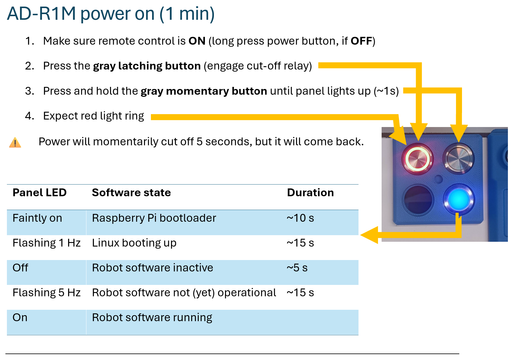
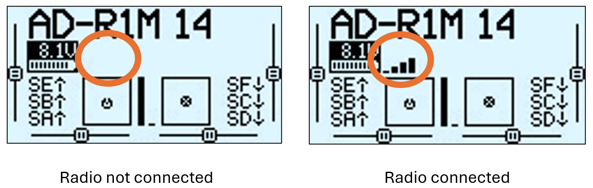
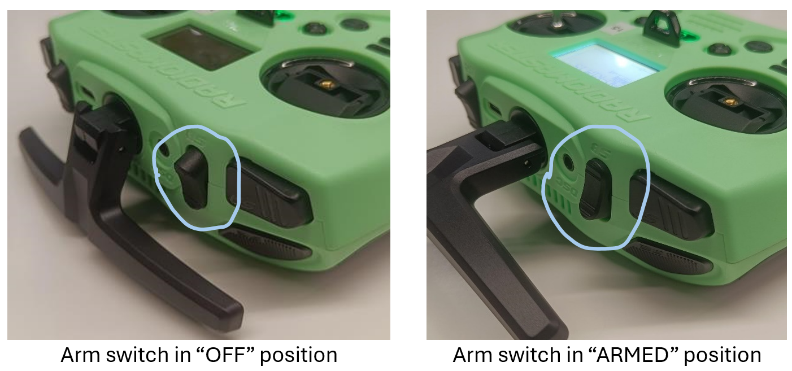
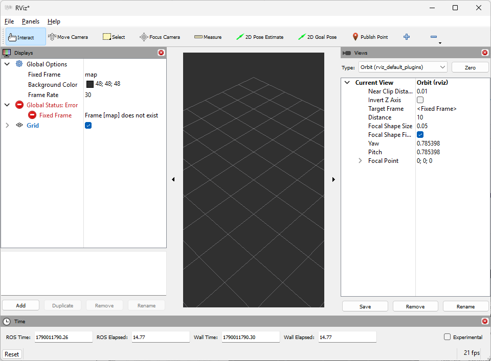

AD-R1M Quick Start Guide
This guide will help you power on, connect to, and operate the AD-R1M robot for the first time.
Important
First-Time Setup Required?
All robots built by Analog Devices come with their SD cards already prepared with the robot software, and you don’t need to flash anything. If you are building an AD-R1M yourself or want to reinitialize your robot software from scratch, complete these steps first:
SD Card Setup - Flash the ADI Kuiper Linux image to your SD card
First Boot Configuration - Configure hostname, WiFi, firmware, and motor tuning
See the AD-R1M Software Guide for complete installation instructions.
Power On
{kind=link}

Press the gray latching button to engage the battery cut-off relay
Press and hold the gray momentary button (~1s) to start the robot electronics
Wait for the LED ring to turn solid green (~60 seconds)
Remote Control

Step 1: Verify Connection
Press [RTN] to return to the home screen. Look for the wireless “bars” icon indicating connection.
{kind=link}

Radio connection status: disconnected (left) vs connected (right)
Step 2: Check Telemetry
Press [TELE] to view the telemetry screen. RxBt should display the battery voltage (e.g., “12.3V”).
Warning
Do not let battery voltage drop below 9V during operation.
Step 3: Arm the Robot
Move the arm switch (SA) to the “ARMED” (down) position. The robot should shake slightly to confirm.
{kind=link}

Arm switch positions: OFF (up) = safe, ARMED (down) = active
Step 4: Drive
Use the right control gimbal:
Forward/Back: Stick up/down
Turn: Stick left/right
Stop: Release to center
For initial RC setup and binding the receiver, see First Boot Configuration.
For RC troubleshooting, see Remote Control Issues.
Connect to the robot using SSH
Connecting to the robot using SSH allows you to:
Configure a WiFi connection
Reconfigure ROS 2 runtime
Debug and troubleshoot robot software
Deploy your own code to the robot
If you haven’t yet configured WiFi, you must connect to the AD-R1M through the wired Ethernet port in the back. Once you configure WiFi, you may disconnect the Ethernet cable, to let your robot roam free.
Note
In the following sections, ad-r1m-123 represents the hostname of your robot and the 123 should be replaced with your actual number, e.g. ad-r1m-6, ad-r1m-42, …
Run:
~$
ssh analog@ad-r1m-123.local
Username: analog
Password: analog
Connect the robot to your WiFi network
Connect to the AD-R1M using SSH
Run
sudo nmtui(passwordanalog)Enter the “Activate a connection” menu
Select your WiFi network from the list
Enter the WiFi password
Verify the connection – does your network have an
*(asterisk) next to it?Press Escape 3 times to exit
nmtui
Prepare software on your computer
The robot stack runs standalone and doesn’t depend on any external software. You may install extra software on your computer for:
Remotely visualizing the robot’s perceived environment
Sending commands to the autonomous navigation function
Running ROS 2 code that communicates with the robot
Our recommended mechanism for this is to use Pixi. First install Pixi by following their installation guide, i.e.:
In a terminal window, run:
~$curl -fsSL https://pixi.sh/install.sh | shClose and reopen the terminal window, or run
source ~/.bashrc(or the rc of your shell of choice).In a PowerShell window, run:
~$powershell -ExecutionPolicy Bypass -c "irm -useb https://pixi.sh/install.ps1 | iex"Close and reopen the PowerShell window.
Then create a Pixi workspace:
~$mkdir pixiws && cd pixiws~/pixiws$pixi init -c robostack-humble -c conda-forge~/pixiws$pixi add ros-humble-desktop ros-humble-rmw-zenoh-cpp ros-humble-teleop-twist-keyboard
Configure the connection to your robot:
~/pixiws$pixi workspace activation env set RMW_IMPLEMENTATION="rmw_zenoh_cpp"~/pixiws$pixi workspace activation env set ZENOH_CONFIG_OVERRIDE="connect/endpoints=['tcp/ad-r1m-123.local:7447'];mode='client'"Note
Replace
ad-r1m-123with your robot’s hostname. You may run these commands again to switch robots.
Visualize the robot using Rviz
Rviz is the standard ROS tool for listening to live data from a robot and displaying it in a 3D environment.
In the AD-R1M repository folder, run:
~/pixiws$
pixi run rviz2
Out of the box, rviz doesn’t display much:
{kind=link}

You may build visualizations by adding display items using the “Add” button in the bottom left. Alternatively, you can download a ready made rviz configuration file: ad_r1m_description/rviz/main.rviz and open it from the Rviz File > Open Config menu, which should look something like this:

Note that the ToF preview will always be upside down because of the sensor’s position. The robot model encodes this orientation information, so all ROS nodes that use ToF data know to “untwist” it – this is just a visualization quirk.
Control the robot using a keyboard
In development, it is often useful to quickly teleoperate the robot without using the physical remote control. The best practice is to use two terminals: one SSH’d into the robot for teleop, and one on your host for visualization.
SSH into the robot and run the keyboard teleop:
~$
ssh analog@ad-r1m-123.local
~$
ad-r1m mkconfig teleop
~$
cd teleop
~/teleop$
docker compose --env-file ad-r1m.env run --rm teleop_keyboard
The teleop includes built-in killswitch control:
Moving around:
u i o
j k l
m , .
i/, : forward/backward
j/l : turn left/right
u/o/m/. : combined movements
anything else : stop
q/z : increase/decrease max speeds by 10%
w/x : increase/decrease only linear speed by 10%
e/c : increase/decrease only angular speed by 10%
p/r : activate/reset killswitch
CTRL-C to quit
Note
Press r to reset the killswitch and enable the motors. You should hear a sound from the motor drives and see a brief shaky movement. Press p to activate the killswitch and stop the motors.
On your host computer, use the Pixi workspace created in Prepare software on your computer.
First, deactivate the killswitch and initialize the motors:
~$
cd pixiws
~/pixiws$
pixi run ros2 topic pub --once /killswitch std_msgs/msg/Bool "{data: false}"
~/pixiws$
pixi run ros2 service call /drive_left/init std_srvs/srv/Trigger
~/pixiws$
pixi run ros2 service call /drive_right/init std_srvs/srv/Trigger
Note
You should hear a sound from the motor drives and see a brief shaky movement when the motors initialize. This confirms the motors are ready. If not, re-run the service call commands.
Then run the keyboard teleop:
~/pixiws$
pixi run ros2 run teleop_twist_keyboard teleop_twist_keyboard --ros-args --remap cmd_vel:=cmd_vel_keyboard
To stop the motors (activate killswitch):
~/pixiws$
pixi run ros2 topic pub --once /killswitch std_msgs/msg/Bool "{data: true}"
Next Steps
Now that your robot is operational, explore these capabilities:
Mapping – Create maps of your environment

Navigation – Autonomous navigation to goals

Create a map: See Mapping with SLAM Toolbox
Navigate autonomously: See Autonomous Navigation with Nav2
Understand the architecture: See AD-R1M ROS2 Architecture
Troubleshoot issues: See AD-R1M Troubleshooting